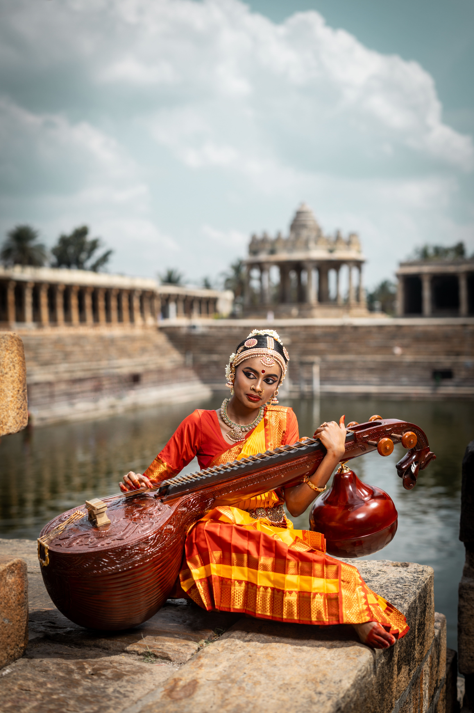
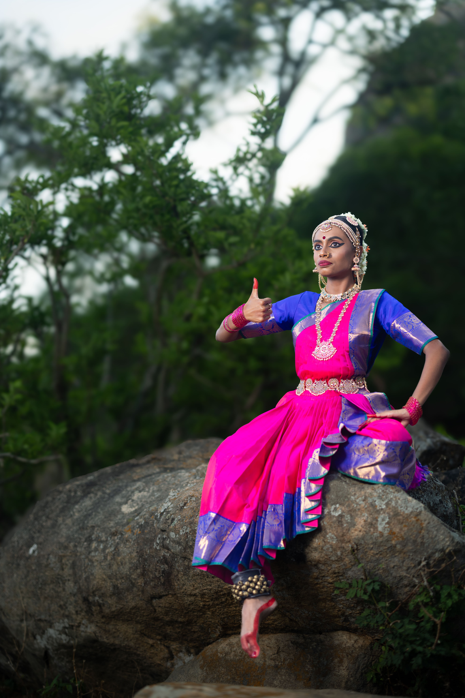

Timeline & Lineage
The Story of Bharatanatyam
From sacred temple ritual to global stage art, Bharatanatyam’s history is a living archive of faith, resilience and reinvention.
History in Pictures
Visual moments from Bharatanatyam’s journey, from temple ritual to modern stage.

Dance as sacred offering in classical South Indian temples.

Pioneers reshaped Bharatanatyam for modern audiences and stages.

The art form today travels beyond India to new audiences worldwide.
Origins & Evolution
The roots of Bharatanatyam reach back to the classical Sanskrit treatise Natya Shastra, which codified principles of drama, dance and music between 200 BCE and 200 CE. Over centuries, these ideas were absorbed, adapted and reimagined in the temples and courts of South India.
Sculptural friezes, devotional poetry and regional performance styles all fed into what we now recognise as Bharatanatyam. The form evolved slowly, shaped by philosophy, aesthetics and community practice rather than by a single moment in time.
Temple Tradition
For centuries, Bharatanatyam lived primarily within temple complexes, performed by hereditary communities of dancers and musicians. The devadasi tradition understood dance as worship — an offering to the deity, experienced in intimate courtyards rather than public theatres.
These dancers were custodians of repertoire, musical knowledge and ritual protocols. Their art was intertwined with temple festivals, seasonal cycles and the everyday life of the community surrounding the shrine.
Revival in Modern India
Colonial policies, social reform movements and changing moral attitudes led to the marginalisation of the devadasi communities and a decline in temple performance traditions in the late nineteenth and early twentieth centuries.
In the decades leading up to Indian independence, artists, scholars and nationalists worked to reframe Bharatanatyam as a “classical” art worthy of preservation. They codified repertoire, created new pedagogies and moved performances to proscenium stages in cities like Madras (Chennai).
Bharatanatyam Today
In the twenty-first century, Bharatanatyam is performed and taught across the world, from neighbourhood dance schools to prestigious international festivals. Dancers negotiate tradition and experimentation, using the form to speak about mythology, identity, politics and personal experience.
While the core grammar of the style remains, its contexts continue to expand — from solo margams to ensemble productions, collaborations and digital performance spaces. The history of Bharatanatyam is still being written, on every stage where it is danced.